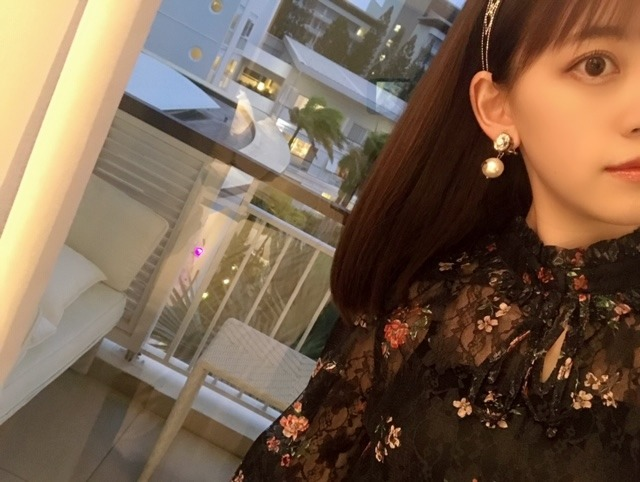
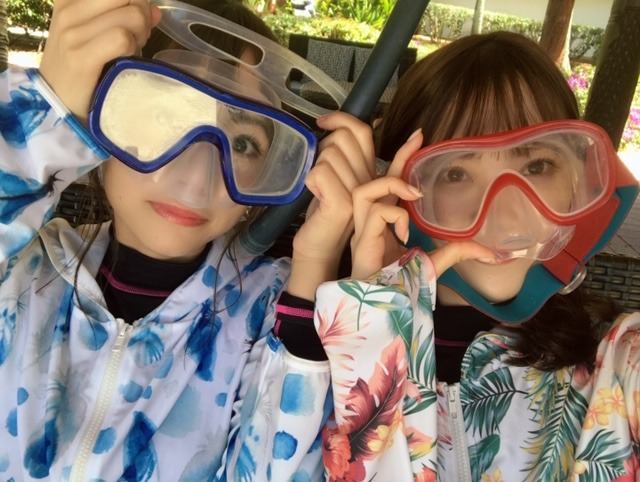

2019/1215Sun#乃木坂世界旅
昨日の #乃木坂世界旅
#堀北コンビ #ニューカレドニア編
見てくださいましたかー？☺︎

今日も21:00〜
Abema TVにて放送です！
見てね
TVの大画面でリアタイしてたのですが
わたしってこんな感じなんだ...と
驚きました。
日奈子といると自然と姉感？母感？が出てしまいます。
冷静で落ち着いた人よりも、個性があって一緒にいて面白い人と居るのがわたしは好きだなぁ。
バランスって大事。
いつも一緒にいるけど、こうして海外に行っても相変わらず楽しくて日奈子のハイテンションで子供みたいなところがわたしは大好きです☺︎❤︎
客観的に見るのも楽しかったし、
何よりも旅を思い出してまた日奈子と旅行いきたいな〜って思いながら観ていました☺︎
YouTube風の編集も嬉しかったです！
YouTubeやりたい〜
素敵な編集、そしてロケをしてくださった
スタッフの皆さんありがとうございましたm(__)m
今日のも楽しみ☺︎
感想も見てますよ〜

でははは
2019/12/15 13:42
コメント(248)
ニューカレドニアの乃木旅見たよー！
今日のも楽しみ！
あのね…実は昨日お誕生日だった！(^-^)
昨日のは誕生日プレゼントだと思って見てたよ！
誕生日プレゼントありがとう！
クロックムッシュとクロックマダム食べてみたいなぁ〜
美味しそうだった！
日本人の奥さんのお店の天使の海老も美味しそうだったなぁ〜♡
一緒に旅に行ってるみたいで見てて楽しい！
インスタに乗せてたミサンガそれぞれどの色選んだのか気になる〜！
早く入らないかなぁ！今から楽しみ！
今日のも楽しみ！
あのね…実は昨日お誕生日だった！(^-^)
昨日のは誕生日プレゼントだと思って見てたよ！
誕生日プレゼントありがとう！
クロックムッシュとクロックマダム食べてみたいなぁ〜
美味しそうだった！
日本人の奥さんのお店の天使の海老も美味しそうだったなぁ〜♡
一緒に旅に行ってるみたいで見てて楽しい！
インスタに乗せてたミサンガそれぞれどの色選んだのか気になる〜！
早く入らないかなぁ！今から楽しみ！
堀&北野コンビ最高でした！！
今日も絶対見ます！
堀ちゃんが存在していることで僕も生きていられてます！
お仕事頑張って！
今日も絶対見ます！
堀ちゃんが存在していることで僕も生きていられてます！
お仕事頑張って！
いいね〜(*≧∀≦*)☺️
堀ちゃんが泣くとこでもらい泣きしてしまった！
その信念みたいなものいつまでも持っていてほしい！
その信念みたいなものいつまでも持っていてほしい！
めっちゃ面白かった
最高傑作間違いなし
最高傑作間違いなし
堀ちゃん、ブログ更新ありがとう〜
必ず見るよー
堀ちゃん、大好きだよー
必ず見るよー
堀ちゃん、大好きだよー
未央奈さんこんばんは♪
abema視るねd(⌒ー⌒)!
2人の掛け合いは視ていてほっこりするよ
可愛い写真もありがとう(〃^ー^〃)
明日もHAPPYを
お休みなさい(^-^ゞ
abema視るねd(⌒ー⌒)!
2人の掛け合いは視ていてほっこりするよ
可愛い写真もありがとう(〃^ー^〃)
明日もHAPPYを
お休みなさい(^-^ゞ
日奈子ちゃんといる時の未央奈ちゃんはお姉ちゃん感がありました！
たまにでる天然めっちゃ可愛かった
今日も楽しみです！
たまにでる天然めっちゃ可愛かった
今日も楽しみです！
未央奈ちゃん、 ニューカレドニアイイね!!世界旅楽しみ
乃木坂世界旅、最高だったよー！
2人が楽しそうにしてるの見てるだけでこっちも嬉しくなっちゃう。正反対な2人だけど、バランス良くて、信頼しあってるのが伝わってくるよ。
写真で思い出を残すのを大切にするとこ、オシャレにこだわるとこ、お姉ちゃん気質なとこ、未央奈の魅力が詰まってたね。
夜に語り合う場面も、2人の思いを改めて知れて、未央奈を推してきて、2期生を応援してきて良かった！！って本当に思った！今日の後編も楽しみにしてるよー
2人が楽しそうにしてるの見てるだけでこっちも嬉しくなっちゃう。正反対な2人だけど、バランス良くて、信頼しあってるのが伝わってくるよ。
写真で思い出を残すのを大切にするとこ、オシャレにこだわるとこ、お姉ちゃん気質なとこ、未央奈の魅力が詰まってたね。
夜に語り合う場面も、2人の思いを改めて知れて、未央奈を推してきて、2期生を応援してきて良かった！！って本当に思った！今日の後編も楽しみにしてるよー
ミオさんとキイちゃんの相性がいいです。
性格が全く違うでもその雰囲気と画面のバランスも絶好な絵になった。今日もわくわくしながら観ます。
ちなみにですね、ミオさんは十月生まれだね。バランスとか物事の平衡性を重視している傾向があるかな。天秤の両端の重量均衡を保つのように。
怖いホラーと温かいジブリ極端なジャンルの映画両方も好きってこともそのバランス大事の無意識の表現かもしれませんかな。
性格が全く違うでもその雰囲気と画面のバランスも絶好な絵になった。今日もわくわくしながら観ます。
ちなみにですね、ミオさんは十月生まれだね。バランスとか物事の平衡性を重視している傾向があるかな。天秤の両端の重量均衡を保つのように。
怖いホラーと温かいジブリ極端なジャンルの映画両方も好きってこともそのバランス大事の無意識の表現かもしれませんかな。
未央奈ブログ更新ありがとう
本当に未央奈ときぃちゃんが母親と小学生の娘みたいだった！笑
今日も世界旅見るね！楽しみ！
本当に未央奈ときぃちゃんが母親と小学生の娘みたいだった！笑
今日も世界旅見るね！楽しみ！
もちろんリアルタイムで見てるよ！
今日も楽しみにしてる！
未央奈やきーちゃんの言葉聞いてると、立場とかは全く違うんだけど、「まだまだ、頑張らなきゃな」って思える。
ファンからしたらちょっと休んでもいいんじゃない？とか思うけど、未央奈自身が頑張るって言ってるから、応援したいなーって思います！
僕は受験で状況は違うけども、お互い頑張りましょう！
諦めちゃダメだね！！
今日も楽しみにしてる！
未央奈やきーちゃんの言葉聞いてると、立場とかは全く違うんだけど、「まだまだ、頑張らなきゃな」って思える。
ファンからしたらちょっと休んでもいいんじゃない？とか思うけど、未央奈自身が頑張るって言ってるから、応援したいなーって思います！
僕は受験で状況は違うけども、お互い頑張りましょう！
諦めちゃダメだね！！
好き。
未央奈ちゃん、お疲れさまです。
お腹の底から出てくるものを
感じましたね。
口先から出るものではなく
ここまで頑張ってきた思いだったり
これからも思い、
とても新鮮に受け止めることが
できました！！！
今日も楽しみですが、
これからも未央奈ちゃんなりに考えて
未央奈ちゃんらしく頑張ってください！！！
応援しています！！！
お腹の底から出てくるものを
感じましたね。
口先から出るものではなく
ここまで頑張ってきた思いだったり
これからも思い、
とても新鮮に受け止めることが
できました！！！
今日も楽しみですが、
これからも未央奈ちゃんなりに考えて
未央奈ちゃんらしく頑張ってください！！！
応援しています！！！
未央奈、ブログ更新ありがとう(*´∀｀)
もちろん！観たよ(о´∀`о)
堀北自撮り劇場面白すぎＯ(≧∇≦)Ｏ
堀北ワールド全開で良きだったよ(*´ω｀*)
未央奈の母感半端なかった！
素敵です( ￣▽￣)
地元のギャルに絡まれてたシーン？！も面白かった(≧▽≦)
食リポ上手だったよ！
未央奈は何でも出来るね！流石(゜∇^d)!!
美味しそうに食べる未央奈にホッコリしたよ！
今日のDay2も楽しみすぎるよ！
ではでは(*￣∇￣)ノ
もちろん！観たよ(о´∀`о)
堀北自撮り劇場面白すぎＯ(≧∇≦)Ｏ
堀北ワールド全開で良きだったよ(*´ω｀*)
未央奈の母感半端なかった！
素敵です( ￣▽￣)
地元のギャルに絡まれてたシーン？！も面白かった(≧▽≦)
食リポ上手だったよ！
未央奈は何でも出来るね！流石(゜∇^d)!!
美味しそうに食べる未央奈にホッコリしたよ！
今日のDay2も楽しみすぎるよ！
ではでは(*￣∇￣)ノ
最高！
堀北コンビ可愛すぎ！
堀北コンビ可愛すぎ！
未央奈ちゃんブログ更新ありがとうございます いつもお仕事お疲れ様です体調壊さないように頑張ってくださいね大好き❤️未央奈ちゃん
いつもお仕事お疲れ様です体調壊さないように頑張ってくださいね大好き❤️未央奈ちゃん
みおなちゃん可愛すぎて死んじゃうかも思いまいた
お2人の楽しそうな会話、絶妙なバランス、そして、熱い魂の言葉が聴けてとても嬉しかったです。
改めて、こんなことを考えているのだなと知ることが出来たし、私は夢に向かって頑張る人が大好きなのでもっともっと応援したいなと思いました
今日も楽しみにしてます！！
＃ホテル内も早く見たいな
＃ジャパニーズプリンセス
改めて、こんなことを考えているのだなと知ることが出来たし、私は夢に向かって頑張る人が大好きなのでもっともっと応援したいなと思いました
今日も楽しみにしてます！！
＃ホテル内も早く見たいな
＃ジャパニーズプリンセス
未央奈の笑顔に癒されるのは僕の思い込みですか。
名古屋全握ありがとう。めっちゃ楽しかったです。
緊張してうまく話せなかったけど、未央奈のウィンクが
可愛いすぎてそれだけで嬉しかったです。
大阪全握行けないけれどバスラ当たった行きます。
個握にも行ってみたいです。
名古屋全握ありがとう。めっちゃ楽しかったです。
緊張してうまく話せなかったけど、未央奈のウィンクが
可愛いすぎてそれだけで嬉しかったです。
大阪全握行けないけれどバスラ当たった行きます。
個握にも行ってみたいです。
未央奈お疲れ様！
ブログ更新ありがとう！
おれもリアタイで見てたよ！
日奈子とのYouTube風の感じも
めっちゃよかった！
未央奈と日奈子の堀北コンビめっちゃ好き！
一緒にいて面白い人といると楽しいよね！
今日のも見るね！
これからも応援してる！
がんばれー！
ブログ更新ありがとう！
おれもリアタイで見てたよ！
日奈子とのYouTube風の感じも
めっちゃよかった！
未央奈と日奈子の堀北コンビめっちゃ好き！
一緒にいて面白い人といると楽しいよね！
今日のも見るね！
これからも応援してる！
がんばれー！
英語のリスニング力すごかったね
堀北のコンビ大好きだよ、すてきな旅をありがとう。
堀北のコンビ大好きだよ、すてきな旅をありがとう。
未央奈さん、こんばんは
乃木坂世界旅、観ましたよ～
堀北コンビ
なんだか親子みたいですね
未央奈さんの母性愛が溢れてる
インスタの写真
建物も空も
そして
未央奈さんも素敵でした(^_^)
また更新してくださいな
乃木坂世界旅、観ましたよ～
堀北コンビ
なんだか親子みたいですね
未央奈さんの母性愛が溢れてる
インスタの写真
建物も空も
そして
未央奈さんも素敵でした(^_^)
また更新してくださいな
乃木坂世界旅おもしろかった！！
ブログ更新ありがと！！！
やっぱ堀北コンビはいいね！楽しそう！笑顔がいっぱいやね！
今日も楽しみ！
体調に気をつけてね！応援してます！
やっぱ堀北コンビはいいね！楽しそう！笑顔がいっぱいやね！
今日も楽しみ！
体調に気をつけてね！応援してます！
なんだかんだ結局は安定の二人だよね～＾＾
みおな、こんばんは。更新ありがとう！近況報告ありがとうございます。年末歌番組楽しみにしてます。体調崩さないように！ では、毎日みおなに良いこと沢山ありますように！ おやすみおな！！
可愛かったです！堀ちゃんの笑顔が大好き！
仲良いのが伝わってきました
仲良いのが伝わってきました
未央にゃブログ更新有難う
未央奈ちゃん、お疲れさまです。
お腹の底から出てくるものを
感じましたね。
口先から出るものではなく
ここまで頑張ってきた思いだったり
これからも思い、
とても新鮮に受け止めることが
できました！！！
今日も楽しみですが、
これからも未央奈ちゃんなりに考えて
未央奈ちゃんらしく頑張ってください！！！
応援しています！！！
お腹の底から出てくるものを
感じましたね。
口先から出るものではなく
ここまで頑張ってきた思いだったり
これからも思い、
とても新鮮に受け止めることが
できました！！！
今日も楽しみですが、
これからも未央奈ちゃんなりに考えて
未央奈ちゃんらしく頑張ってください！！！
応援しています！！！
自分を客観的に見る事で新たな未央奈ちゃんの発見だ！
まだ何処かで、まだ知らない新しい自分に会えるといいね♡
まだ何処かで、まだ知らない新しい自分に会えるといいね♡
ニューカレドニアって、
たしか白麻衣様が猛プッシュしていましたよね(笑)
日奈子さんの
無邪気さは最高ですが、
それにより冷静になってしまうんですかね～
最近の未央奈さんを観ていると、
顔からも優しさがにじみ出て･･･
母性に目覚めました？(笑)
たしか白麻衣様が猛プッシュしていましたよね(笑)
日奈子さんの
無邪気さは最高ですが、
それにより冷静になってしまうんですかね～
最近の未央奈さんを観ていると、
顔からも優しさがにじみ出て･･･
母性に目覚めました？(笑)
未央奈ちゃん更新ありがとう
番組は見てないです。ごめんなさい
最近未央奈ちゃんのおかげで日奈子ちゃんも名前と顔覚えました。
絢音ちゃんもです。
いつも未央奈ちゃんの写真で癒されてます。

番組は見てないです。ごめんなさい
最近未央奈ちゃんのおかげで日奈子ちゃんも名前と顔覚えました。
絢音ちゃんもです。
いつも未央奈ちゃんの写真で癒されてます。
テレビで今リアルタイムで見ています!
堀北コンビ、本当に本当に素敵で可愛くて面白いです。
2期生やグループに対しての熱い想いに胸を打たれました。
私も個性たっぷりで可愛くて魅力的な2期生お一人お一人が大好きです。
これからも堀さん北野さんはじめ、2期生のご活動を心から応援してます。
楽しい放送を本当にありがとうございました!!
堀北コンビ、本当に本当に素敵で可愛くて面白いです。
2期生やグループに対しての熱い想いに胸を打たれました。
私も個性たっぷりで可愛くて魅力的な2期生お一人お一人が大好きです。
これからも堀さん北野さんはじめ、2期生のご活動を心から応援してます。
楽しい放送を本当にありがとうございました!!
未央奈ちゃんブログ更新ありがとう！
昨日の乃木坂世界旅見たよ！
めちゃくちゃ可愛かったよ！
昨日名古屋の全国握手会、握手してくれて嬉しかったよ！
今度、名古屋で握手するときは僕の名前覚えていてほしいなー！
お願いします！
これからも頑張ってね！
応援してるよ！
昨日の乃木坂世界旅見たよ！
めちゃくちゃ可愛かったよ！
昨日名古屋の全国握手会、握手してくれて嬉しかったよ！
今度、名古屋で握手するときは僕の名前覚えていてほしいなー！
お願いします！
これからも頑張ってね！
応援してるよ！
未央奈さんと日奈子さん、性格が違うんですね。
二人ともハイテンション系だと感じてましたが、
未央奈さんが落ち着いてる感じなのが、
今回の二人旅で伝わってきました。
性格が違うからこその化学反応が、見ていて楽しかったです♪
二人ともハイテンション系だと感じてましたが、
未央奈さんが落ち着いてる感じなのが、
今回の二人旅で伝わってきました。
性格が違うからこその化学反応が、見ていて楽しかったです♪
幸せ分けてくれてありがとう。２期生の絆が尊い。これからも頑張って
ブログ更新ありがとう
昨日も今日も見たよ❗
二人とも可愛かったよ！
寒いので風邪に気を付けて頑張って下さい。応援してます。
昨日も今日も見たよ❗
二人とも可愛かったよ！
寒いので風邪に気を付けて頑張って下さい。応援してます。
未央奈～ こんにちは
ブログ更新ありがとうございます。
堀北コンビの「世界旅」、おつかれさまでした。
２期生に対する思いは人一倍熱く、先頭に立ってリードしてきたあの頃をしっかりと思い出しました。未央奈の体験があったからこそ、今の３期生・４期生が存在し、乃木坂が今日、こうしていられるわけで、未央奈の活躍には、頭の下がる思いです。
でも、きいちやんや絢音の存在もホントに大きかったと思います。これからも、堀北コンビをはじめ二期ちゃんたちのご活躍、お祈りしております。
さて、AICHI SKY EXPOでの全握、ポートメッセでの個握、おつかれさまでした。私の大好きな曲「路面電車の街」がフルコーラスで聞けたことも何よりでした。未央奈にお会いできたのも、これで１２回目、かわいくかつ美しくなったお会いでき、光栄です。ありがとうございました。
ブログ更新ありがとうございます。
堀北コンビの「世界旅」、おつかれさまでした。
２期生に対する思いは人一倍熱く、先頭に立ってリードしてきたあの頃をしっかりと思い出しました。未央奈の体験があったからこそ、今の３期生・４期生が存在し、乃木坂が今日、こうしていられるわけで、未央奈の活躍には、頭の下がる思いです。
でも、きいちやんや絢音の存在もホントに大きかったと思います。これからも、堀北コンビをはじめ二期ちゃんたちのご活躍、お祈りしております。
さて、AICHI SKY EXPOでの全握、ポートメッセでの個握、おつかれさまでした。私の大好きな曲「路面電車の街」がフルコーラスで聞けたことも何よりでした。未央奈にお会いできたのも、これで１２回目、かわいくかつ美しくなったお会いでき、光栄です。ありがとうございました。
本当に本当に楽しかったです
2人の絆、仲良しなところ、今後の夢などなど、堀北コンビの想いなども多く知れて一層好きになりました。
もっと見たいなぁと思う2人の旅でした！！
そしてニューカレドニアに行きたくなりました！
とにかく楽しいの一言です
2人の絆、仲良しなところ、今後の夢などなど、堀北コンビの想いなども多く知れて一層好きになりました。
もっと見たいなぁと思う2人の旅でした！！
そしてニューカレドニアに行きたくなりました！
とにかく楽しいの一言です
最近のベースメイクでオススメ教えてほしい！
こんばんわん
１日お疲れ様！！
まだ途中までしか観てない。。。
全部見終わったら感想言うね
昨日のほっぺ坂に今日のメリクリ坂、いつもと違う髪形だね
珍しい髪形
めっちゃ可愛いね
あと、その時のメイクが凄くタイプ
何を使っていたか教えて～
最後のウインクはずるいよ
ではまた(*´∇｀*)
１日お疲れ様！！
まだ途中までしか観てない。。。
全部見終わったら感想言うね
昨日のほっぺ坂に今日のメリクリ坂、いつもと違う髪形だね
珍しい髪形
めっちゃ可愛いね
あと、その時のメイクが凄くタイプ
何を使っていたか教えて～
最後のウインクはずるいよ
ではまた(*´∇｀*)
やほー。
二人旅見たよぉ。
堀北コンビは、久々の感じがあったなぁ。
ティータイムトークで、未央奈の眼を見たらますます
好きになっちゃいました。
2019年は、未央奈の個握に全投げして、一杯声が聞けて幸せでした。何でこんなに好きになっちゃったんだろうか、自分でも不思議だったけど、もともと好きになったのって、別れ際もっと好きになるのMV見たときだったんだよね。
最近は、いつかできる、シングアウトが好きだけどね。
2期生の絆っていいね。何か、ラグビーとか、高校野球とかみたいに、劣勢なときにこそ大事だよね。
今、2期生が一番少なくなってるし、3期、4期が勢いあって乃木坂も凄い勢いだけど、卒業生が作ってきた
乃木坂の良さを、身を持って体験した、未央奈達2期生が後輩に伝えていかなきゃダメだよね。
廻りの為にも、堀北コンビは、自分たちが前に出て行けばいいと思うよ。
未央奈好きは、多分変わらないと思います。
これからも応援してます。
頑張ってるのは知ってるつもりだから、頑張ってとは言いませんよ。楽しめるようにね。
でははは。
二人旅見たよぉ。
堀北コンビは、久々の感じがあったなぁ。
ティータイムトークで、未央奈の眼を見たらますます
好きになっちゃいました。
2019年は、未央奈の個握に全投げして、一杯声が聞けて幸せでした。何でこんなに好きになっちゃったんだろうか、自分でも不思議だったけど、もともと好きになったのって、別れ際もっと好きになるのMV見たときだったんだよね。
最近は、いつかできる、シングアウトが好きだけどね。
2期生の絆っていいね。何か、ラグビーとか、高校野球とかみたいに、劣勢なときにこそ大事だよね。
今、2期生が一番少なくなってるし、3期、4期が勢いあって乃木坂も凄い勢いだけど、卒業生が作ってきた
乃木坂の良さを、身を持って体験した、未央奈達2期生が後輩に伝えていかなきゃダメだよね。
廻りの為にも、堀北コンビは、自分たちが前に出て行けばいいと思うよ。
未央奈好きは、多分変わらないと思います。
これからも応援してます。
頑張ってるのは知ってるつもりだから、頑張ってとは言いませんよ。楽しめるようにね。
でははは。
未央奈ちゃん！！
とても可愛いwよかったよぉ
とても可愛いwよかったよぉ
ブログ更新ありがとう
握手会もあって忙しいのにこまめにブログを更新してて凄いなっていつも思ってます！
未央奈の乃木坂に対する姿勢とかもカッコ良くて最高の推しメンです！
握手会もあって忙しいのにこまめにブログを更新してて凄いなっていつも思ってます！
未央奈の乃木坂に対する姿勢とかもカッコ良くて最高の推しメンです！
お疲れ様です、堀さん！
ところで、前回のブログで節約生活をしているとのことでしたけど、その後、いかがでしょうか？？
僕は堀さんのアイドル活動を応援しているんですけど、今節約生活も応援したいです！
なぜなら、堀さんが節約生活をがんばっているのなら、ファンである僕も節約生活をがんばれそうな気がするからです
…そうですね、なにか、打算的なことを言っているかもしれませんね(笑)
そして、最近堀さんのほっぺ坂を観たのですが、正直最初だれかわかりませんでした
なぜなら、僕の中で堀さんはキュートな女の子というイメージなんですけど、ほっぺ坂の堀さんはキレイな大人の女性という雰囲気だったからです
そうですね、キュートで大人っぽくてキレイ、これが今の堀さんの魅力なのかもしれませんね
それでは、長くなりましたけど、乃木坂工事中の観ます(笑)
またなにかあればコメントします。健康にはお気をつけてお過ごしください！
ところで、前回のブログで節約生活をしているとのことでしたけど、その後、いかがでしょうか？？
僕は堀さんのアイドル活動を応援しているんですけど、今節約生活も応援したいです！
なぜなら、堀さんが節約生活をがんばっているのなら、ファンである僕も節約生活をがんばれそうな気がするからです
…そうですね、なにか、打算的なことを言っているかもしれませんね(笑)
そして、最近堀さんのほっぺ坂を観たのですが、正直最初だれかわかりませんでした
なぜなら、僕の中で堀さんはキュートな女の子というイメージなんですけど、ほっぺ坂の堀さんはキレイな大人の女性という雰囲気だったからです
そうですね、キュートで大人っぽくてキレイ、これが今の堀さんの魅力なのかもしれませんね
それでは、長くなりましたけど、乃木坂工事中の観ます
またなにかあればコメントします。健康にはお気をつけてお過ごしください！
みおなー！おもしろかったよー！
いつもありがとう
いつもありがとう
未央奈ブログ更新ありがとう！
今日は24thシングルの2期生ドキュメンタリー映像見たよ！！！
初期からずっと未央奈は未央奈らしさ全開だね！
悩むこともたくさんあっただろうけど、その度にどんどん強くなって行って、今の未央奈があるんだね。
本当に尊敬します、これからも頑張ってね！！！
ずっと応援してます！大好きだよ
今日は24thシングルの2期生ドキュメンタリー映像見たよ！！！
初期からずっと未央奈は未央奈らしさ全開だね！
悩むこともたくさんあっただろうけど、その度にどんどん強くなって行って、今の未央奈があるんだね。
本当に尊敬します、これからも頑張ってね！！！
ずっと応援してます！大好きだよ


もちろんリアタイで観たよ～♪
一緒に旅してる気分で嬉しかったし、
みおちゃんの姿がとっても新鮮でした✨
日奈子ちゃんは面白くて個性的ですねー！
みおちゃんの母感を引き出してました☆笑
2人の姿はユーチューバーみたいでしたね！
みおちゃんのYouTubeも見てみたいです✴
最後の場面は本当に心に刺さりました！！
みおちゃんを更に理解できた気がします♡
みおちゃんに出会えて良かったと思うし、
みおちゃんを好きになって良かったです❤
今日もとっても楽しみにしてますよ～☺